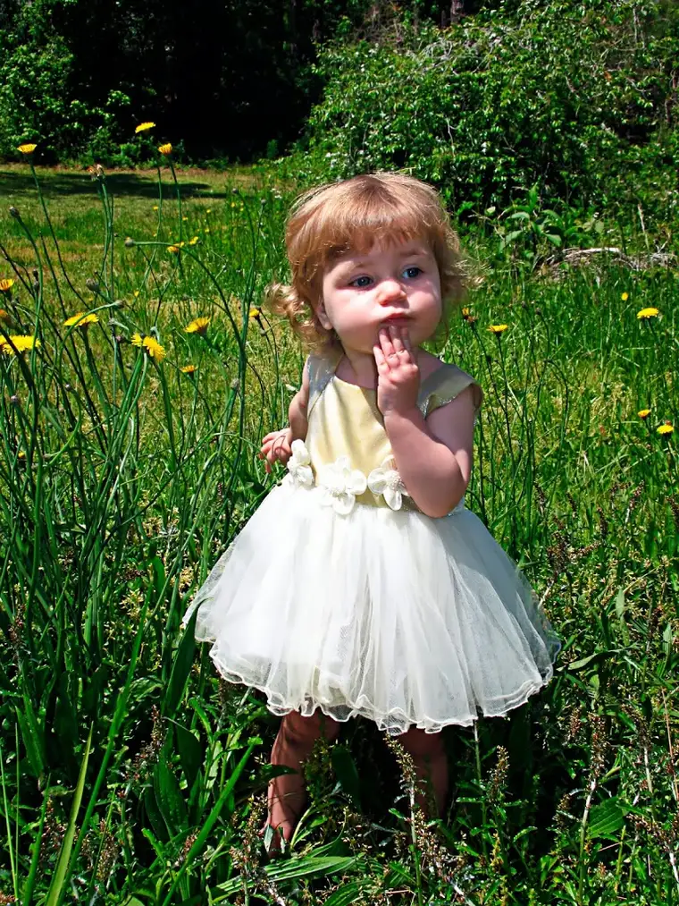

It’s a beautiful thing to realize something over which you’ve been criticized is one of your most precious gifts.
A few years ago, someone labeled me a “brooder.” While it wasn’t done in a name-calling sort of way, it felt a bit critical to me; not unlike something similar I’ve also heard said about me: “You think too much.”
Okay, you got me. Guilty as charged. Introverts do that kind of thing. But hang on here. I need to brood just a little, but I promise you’ll appreciate the end.
First, full disclosure: my brooding ways have not always been beneficial.
 |
| You brooder you! |
{kind=link}
When I was in preschool, just a little older than this little princess, dandelions nearly got me in a heap of trouble. It was spring, and to me, dandelions were the most delightful flowers because they seemed to appear out of nowhere, nearly overnight.
A batch had popped up along the wall just outside our school and as we lined up there to wait for the bus, I became absorbed in the little yellow “flowers” and began studying them.
I remember the cool of the shade there, and how lovely it felt to be outside, examining and picking these bright-colored delights. I was so absorbed in those dandelions that I didn’t hear the bus pull up or the kids behind me piling into it. I didn’t even know it had started off until after I heard the rocks kicking up in its wheels.
When I realized what had happened, panic set in. I was soon running along the gravel road in front of the school, sucking up the dust of that bus in tears, certain I’d been left behind and would never be found again. It was an awful feeling of abandonment.
And all because of those dandelions and my brooding tendencies.
Thankfully, someone on the bus saw me running after it and it soon stopped. I was ushered onto the bus and into the arms of my waiting 4-year-old sister. I must have been all of 3 at the time. Camille, not my teacher, had brought me back into the world of safety and love.
I have no doubt that behind the bus, a trail of squished dandelions were lying lifeless in the wake.
Yes, my brooding had cost me but when I think of that day all these years later, I thank God for my brooding.
Brooding has negative connotations but what if we think of it just a little differently? These more positive words also describe what I am like when in this mode: thoughtful, reflective, intent, studious, curious, detailed, amazed.
And it is these qualities that have brought my writing to life. Without my propensity for stopping and quite literally smelling the roses — and not only smelling but inhaling and inspecting, too — I could not do justice to my work. Brooding brings a depth to what I do as a writer. It helps good writing become even richer.
As it turns out, this propensity in me is a beautiful gift. God made me to not just hurry by but stop and wonder, study and speculate. I love this about myself!
What a difference a perspective can make. What a difference a few adjustments in thinking can make. What a difference a tweak in words can make.
Q4U: Have you ever been criticized over something that has turned out to be one of your gifts?